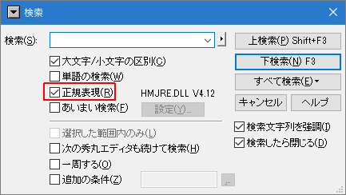
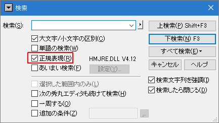

- 正規表現の検索とはどうやればできるんですか？

検索や置換のダイアログには「正規表現」というチェックボックスがあります。 正規表現を使用したい場合は、ここにチェックをいれてください。 すると指定された文字列は正規表現として解釈され、それに対応した検索や置換が実行されます。

検索や置換のダイアログには「正規表現」というチェックボックスがあります。 正規表現を使用したい場合は、ここにチェックをいれてください。 すると指定された文字列は正規表現として解釈され、それに対応した検索や置換が実行されます。
